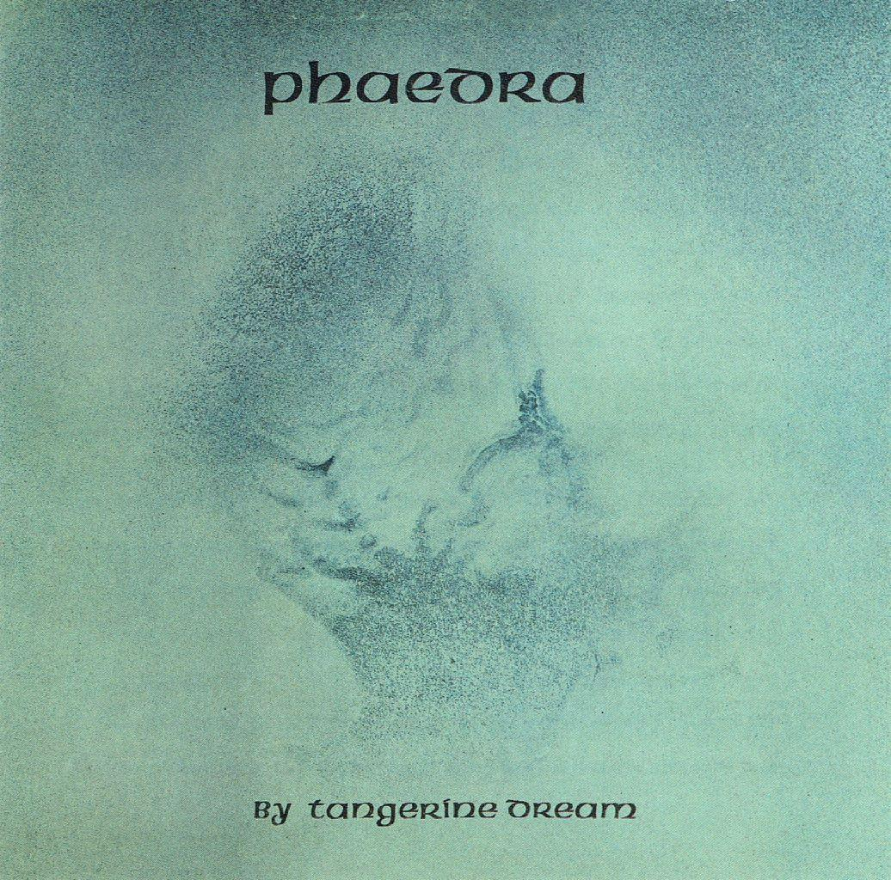

Structure in ambient music is usually based on gradual development rather than clear verse and chorus sections. Pieces often evolve slowly over time, with layers and sounds being introduced or removed almost imperceptibly. Repetition is extremely important, with patterns and textures changing subtly to maintain interest. Rather than building towards dramatic climaxes, ambient music aims to create a continuous and immersive listening experience.
Example:
An ambient piece may begin with only a few sounds before slowly adding additional layers and textures. These gradual changes help create movement while preserving the calm atmosphere of the music.